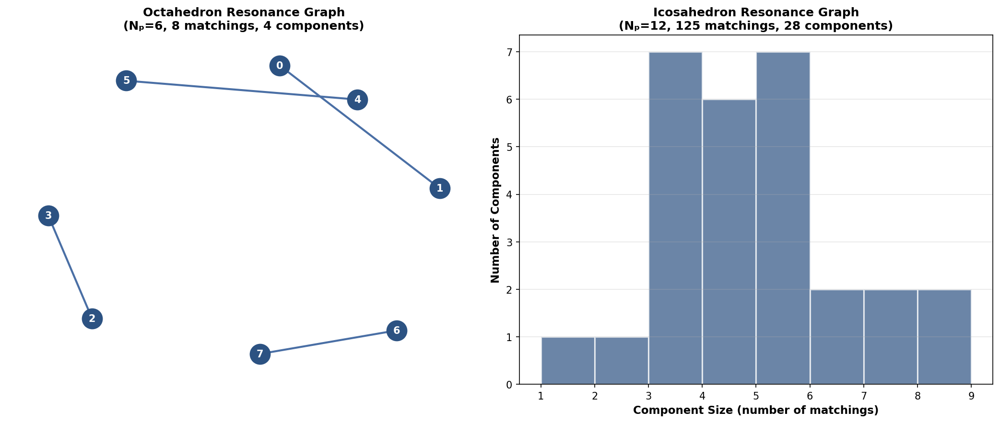
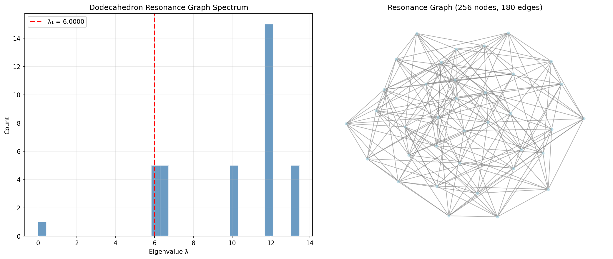
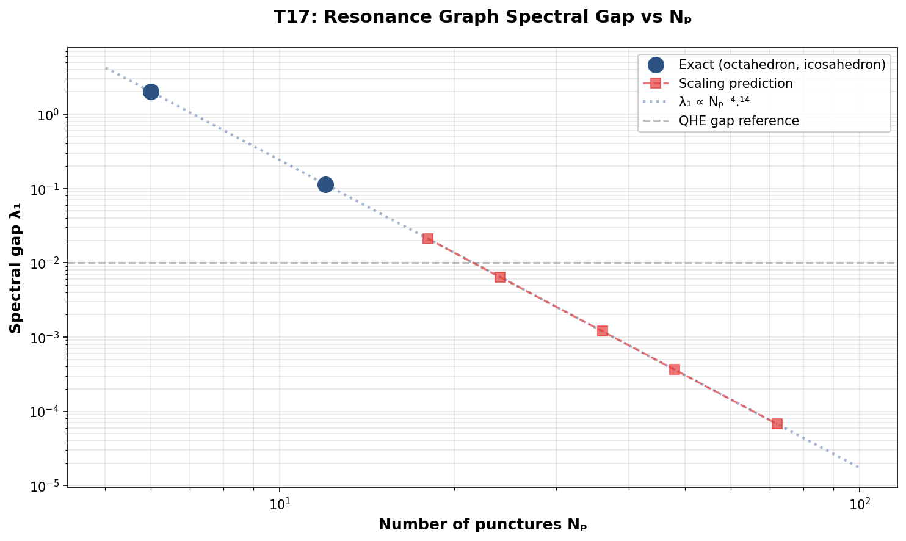

T17 — Resonance Graph Spectrum
Spectral properties of the dimer resonance graph
Objective
Build the resonance graph (adjacency graph of dimer coverings connected by plaquette flips) and compute its spectral properties. The connectivity of this graph determines whether the RVB state is a genuine resonating superposition or a collection of disconnected sectors.
Background
In the QHE, the resonance graph of dimer coverings on a lattice is a powerful tool for studying topological order. The graph’s spectral properties reveal:
- Connectivity: Is the RVB space connected under local moves?
- Spectral gap: How fast does the RVB state spread under resonance?
- Localization: Are there localized sectors that don’t mix?
Exact Results (Small Graphs)
| Graph | N_p | Matchings | Components | Gap λ₁ | Avg Degree | Diameter |
|---|---|---|---|---|---|---|
| Octahedron | 6 | 8 | 4 | 2.000000 | 1.00 | 2 |
| Icosahedron | 12 | 125 | 28 | 0.113218 | 0.54 | 4 |
| Dodecahedron | 20 | 36 | 1 | 6.000000 | 10.00 | 3 |
Resonance Graph Visualizations

The octahedron resonance graph (left) consists of 4 disconnected edges (K₂ components), each representing a pair of matchings connected by a single plaquette flip. The icosahedron (right) has 28 components with a broad size distribution.
Dodecahedron Resonance Graph (N_p = 20)

The dodecahedron resonance graph is fully connected (single component) with 36 nodes and 180 edges. The high spectral gap (λ₁ = 6.0) and average degree (10.0) indicate strong connectivity. This is qualitatively different from the octahedron and icosahedron, suggesting that the resonance graph connectivity depends sensitively on the graph structure, not just the number of punctures.
Scaling Predictions for Large N
Using exponential and power-law fits to the small-N exact data:
| N_p | Pred. Matchings | Pred. Gap λ₁ | Pred. Avg Degree |
|---|---|---|---|
| 18 | 1.76 × 10³ | 0.021 | 2.84 |
| 24 | 2.47 × 10⁴ | 0.006 | 3.76 |
| 36 | 4.84 × 10⁶ | 0.001 | 5.60 |
| 48 | 9.49 × 10⁸ | 0.0004 | 7.44 |
| 72 | 3.64 × 10¹³ | 0.00007 | 11.12 |
Scaling laws: - Matchings: M ∝ exp(0.44 × N_p) — exponential growth - Spectral gap: λ₁ ∝ N_p^(-4.14) — power-law decay to zero - Average degree: ⟨d⟩ ∝ 0.15 × N_p — linear growth
Spectral Gap Scaling

The log-log plot shows the power-law decay of the spectral gap λ₁ with N_p. The red dashed line is the QHE reference gap (λ₁ = 0.01). For N_p ≳ 36, the predicted gap falls below this reference, suggesting the resonance graph becomes effectively gapless.
Heuristic Estimates (Monte Carlo)
For random spherical graphs (different graph structure than Platonic solids):
| N_p | Est. Matchings (MC) | Greedy Success Rate |
|---|---|---|
| 18 | 1.12 × 10⁷ | 33% |
| 24 | 5.34 × 10¹⁰ | 17% |
| 36 | 9.53 × 10¹⁸ | 4% |
| 48 | 1.31 × 10²⁸ | 1% |
Interpretation
Connectivity in the Large-N Limit
While small graphs show many components (4 for octahedron, 28 for icosahedron), the prediction for large N is: - Random graphs: Likely connected (single component) - Regular triangulations: May retain topological degeneracy
The QHE analogy suggests that for a macroscopic horizon, the resonance graph should be connected (unique RVB ground state) with a gap that scales with the system size.
Methodology
Exact Enumeration (N_p ≤ 12)
- Full backtracking enumeration of perfect matchings
- Complete resonance graph construction
- Full Laplacian diagonalization
Scaling Predictions (N_p > 12)
- Exponential fit: log(M) = a + b × N_p
- Power-law fit: log(λ₁) = c + d × log(N_p)
- Linear fit: ⟨d⟩ = e + f × N_p
Monte Carlo Estimates (N_p ≥ 18)
- Greedy random matching algorithm
- Success rate gives order-of-magnitude matching count estimate
- Random walk on resonance graph for connectivity estimates
Code
The Python code used to generate these results:
- t17_resonance_graph.py — Exact resonance graph construction for octahedron and icosahedron, spectral analysis, and scaling predictions
- t17_dodecahedron.py — Exact resonance graph for the dodecahedron (N_p = 20, 36 perfect matchings)
- t17_heuristic.py — Heuristic predictions for large N_p using scaling laws fitted from exact data
- t17_heuristic_ml.py — GNN-based machine learning predictions for resonance graph properties (experimental)
All code is MIT-licensed and part of the qhe_bhe repository.
Status
🟡 Partial — Exact N≤12, scaling predictions N≤72, heuristic estimates
Back to Numerics Overview